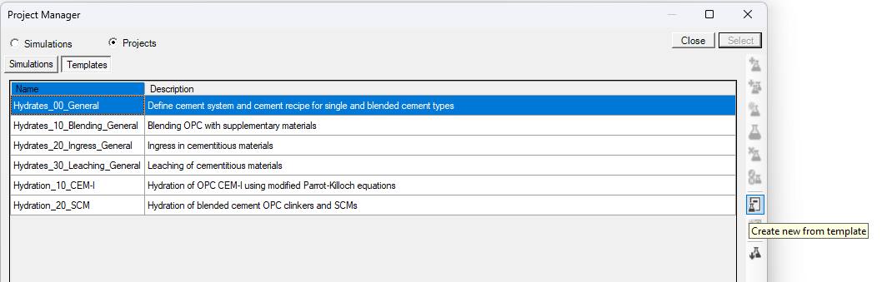
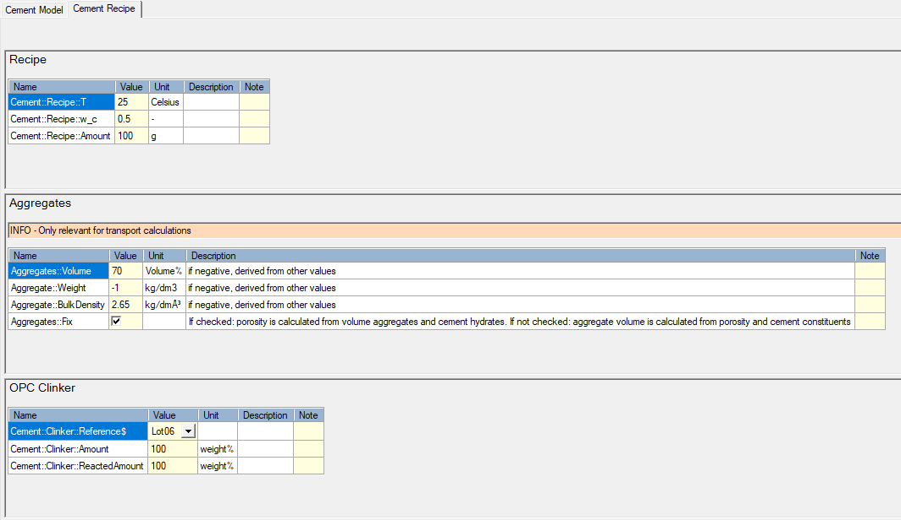
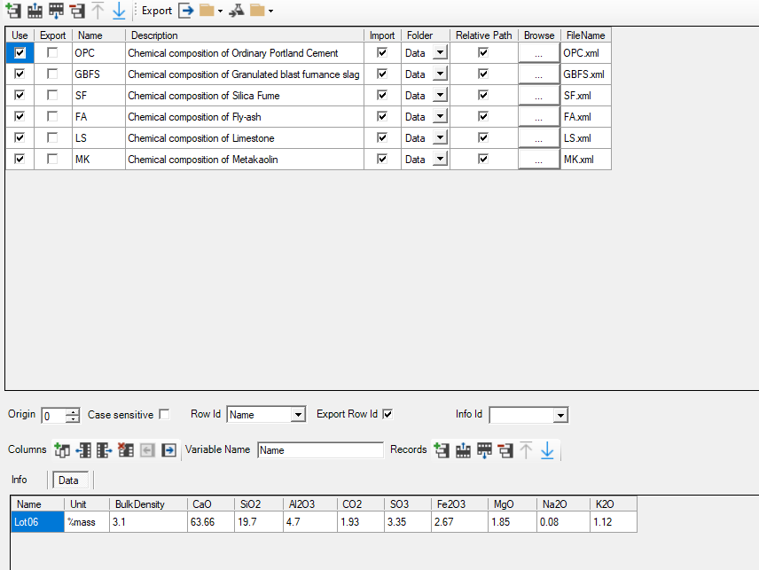
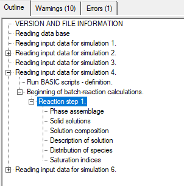
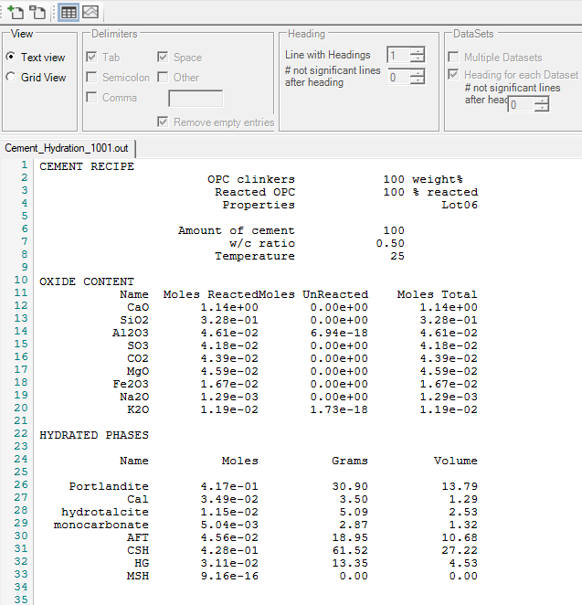

Tutorial - Calculate the cement hydrates assemblage and pore water composition of CEMI
Tutorial - Calculate the cement hydrates assemblage and pore water composition
Description
Calculate the hydrates assemblage and pore water composition of the hydration of 100 g CEM-I with a water/cement ratio of 0.5 and at a temperature of 25°C. The CEM I oxide composition is taken from the Lothenbach and Winnefeld (2006) (their table 1). Calculations are done in the Ca-Si-Al/Fe-S-Mg-C-Na-K system.
You will learn to
Start a simulation from a template in a module
Template - Hydrates_00_General
Depends on
Tutorial - Create Managed Project with Cement Module
Step 1 – Create simulation from template for the calculation of the hydrates assemblages
Go to Project Manager 
Select the project in the bottom panel
Go to Templates tab in the top panel
Select the template “Hydrates_00_general” (See Hydrates_00_General)
Click the “Create new from template” button 

The Metadata dialogue window opens.
Define the name of the simulation (CEM I)
Click OK
The Project Manager is active again.
Select the simulation (CEM I) and click Select
Step 2 – Define the problem
Only information in the input tables needs to be changed if values are different from the default values. All instructions and data are included in the simulation via the template.
Go to the Global Definitions input tab
Go to the Global Variables
The template consists of two tabs: “Cement Model” and “Cement Recipe” to, respectively, select the cement model and define the cement mixture.
Go to the Cement Model tab (See ModuleCement_Input_01_ModelSystem)

The first group “Cement System" defines which elements are to be considered in the calculations. Selection is done via the drop down menu for the variable "Cement::Model::System$" (See Group - Cement System)
Select system 17 from the drop down menu. Note that this system also contains Cl but is neglected in this tutorial (no Cl in the clinker composition)
The second group “Model Options” allows to select some specific minerals to be included or excluded from the models – default selections are used in this tutorial (See Group - Model Options).
Go to the Cement Recipe tab (See ModuleCement_Input_02_Recipe)

The tab contains several groups - for this tutorial, only the first ("Recipe") and third ("OPC Clinker") are of interest.
The group “Recipe” defines the temperature (°C), the water/cement ratio (-) and the amount of cement (g) (See Group - Recipe).
The group “OPC Clinker” defines the OPC clinker in the mixture (See Group - OPC Clinker).
The first variable ("Cement::Clinker::Reference$") defines the clinker composition in terms of oxide. The drop down list is linked to the data block "OPC" in which the weight percentages of the different oxides are defined.
Go to DataBlock
Select OPC data block in the top panel. The records in that data block are shown in the bottom panel.

For each of the cement constituents (OPC and SCMs), a data table is available. In each of these data table, an oxide composition is given by default (see example for OPC). The indicator in the column Name is used in the dropdown list for the record "Cement::Clinker::Reference$" in the group "Cement::Clinker::Reference$". The reference to the oxide composition is listed in the Info tab. Other compositions can be added (See Tutorial - Adapt oxide composition of OPC clinker).
Run the problem 
Step 3 – Check the output
Go to phreeqc.out file 
Go to Outline tab
Go to Reading input data for simulation 4 -> Beginning of batch-reaction calculation

Note first that there are warnings. This is because Cl-containing hydrates are in the hydrate assemblage (due to the selection of system 17), but there is no Cl in the input.
The output file gives the standard phreeqc output related to a batch reaction calculation. All geochemical information can be obtained from this file. The template also produces a special output file with the most important information for the cement system.
Go to the Data File output workspace 
Click Open Data File 
Open the file “Cement_Hydration_1001.out”
Click View options 
Select Text View

In this view, you find information on the cement recipe, the oxide composition, the hydrated phases and the pore water composition, calculated volumes, and information on solid solution composition
END Calculate the cement hydrates assemblage and pore water composition
Created with the Personal Edition of HelpNDoc: Streamline Your Documentation Creation with a Help Authoring Tool